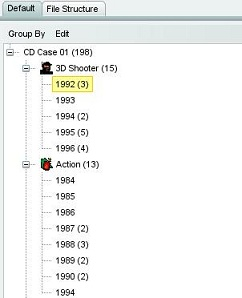

Grouping pane
The grouping pane allows items to be grouped. Two levels of grouping are supported. This allows you to group on, for example, year and category. You can disable the grouping pane from the view menu or by pressing the "F10" key.

Selecting fields
From the "group by" menu you can select the field(s) on which the items should be grouped. You can either choose to group on one level or on two levels.
Expand or Collapse the tree
Select "expand all" from the "edit" menu to quickly expand all nodes of the tree. The "collapse all" menu option will collapse (fold) every node in the tree.
Undo grouping
Select "clear" from the "edit" menu to undo the grouping.